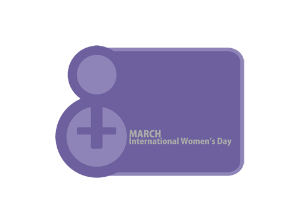

|
|

برای عالیه و هشتم مارس در بند عمومی زندان اوین / دلارام علی
يكشنبه16 اسفند 1388
عالیه جان؛ حساب روزهایی را که تو پشت میله ها گذراندی از دستم در رفته است. می بینی؟ روزها بیرحم تر و سریعتر از آن می گذرد که امان دهد تک تک لحظه هایی را که تو پشت دیوارهای بلند قلعه اوین سپری کرده را در خاطرم جای دهم. می دانم حسابش را دقیق داری, لحظه به لحظه و ثانیه به ثانیه اش را.
امروز هشت مارس, روز جهانی زن است و من برای تو می نویسم که اولین زنی هستی که در این چند سال تنها به جرم دفاع از حقوق زنان محکوم به سه سال حبس قطعی شدی. می دانم خوب می دانی خواهران من و تو در این سالها و ماهها روزهای بسیاری را در زندان گذرانده اند, در سلولهای کوچک انفرادی 209, در بند پر سروصدای عمومی زنان و در زندانهای بسیاری در گوشه و کنار ایران.
می دانم که خوب می دانی تو در زندانی کوچک تر و ما در زندانی بزرگتریم. زندانی که کلاممان را, فکرمان را و روحمان را به بند می کشد. اما تو صبور باش. صبور باش و برای زنان همبندت بگو که این روزها خواهد گذشت و روزی ما, من و تو, دوباره کبوترهایمان را در آسمان پرواز خواهیم داد. کبوترهایی که هیچ بندی پروازشان را اسیر نمی کند.
امسال بدون تو و بسیارانی دیگر هشتم مارس "روز جهانی زن" بی شک شاد نخواهد گذشت. اما به یاد داشته باش که ما روزهای بزرگی را تصویر کرده ایم که تلخی این دوران را شیرین خواهد کرد. به یاد داشته باش که روزهایی را که پشت میله ها گذرانده ای هرگز بی ثمر نبوده است. تو به ما آموختی که باید ایمان داشت به راهی که برگزیده ای و باید خطر کرد. هشتم مارس امسال برای ما پر از تو خواهد بود.
روز جهانی زن بر تو و بر تمام زنان پشت میله های زندان مبارک باد.
